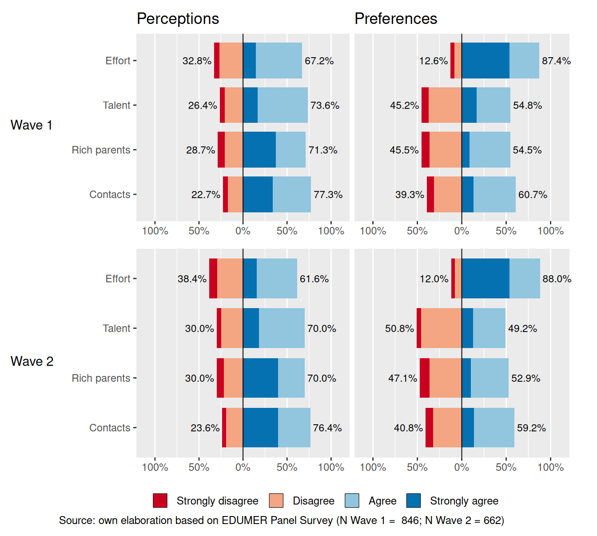
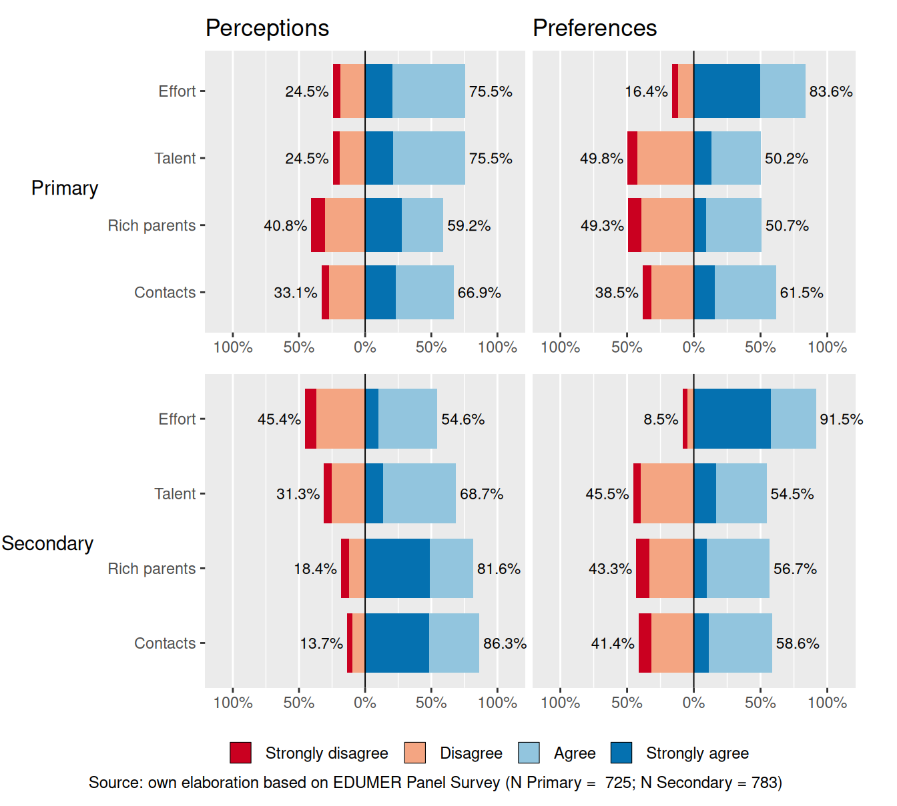

| Model | $\chi^2$ (df) | CFI | RMSEA (90\% CI) | $\Delta \chi^2$ ($\Delta$df) | $\Delta$CFI | $\Delta$RMSEA | Decision |
|---|---|---|---|---|---|---|---|
| Configural | 117.7 (68) | 0.991 | 0.035 (0.024-0.046) | 0 (0) | 0 | 0.000 | Reference |
| Weak | 122.51 (72) | 0.990 | 0.034 (0.024-0.045) | 4.809 (4) | 0 | -0.001 | Accept |
| Strong | 128.53 (80) | 0.991 | 0.032 (0.021-0.042) | 6.02 (8) | 0 | -0.002 | Accept |
| Strict | 130.17 (84) | 0.991 | 0.031 (0.02-0.04) | 1.635 (4) | 0 | -0.002 | Accept |
Results
This section is organized into three parts. First, we present descriptive statistics and visualizations of the survey items measuring meritocratic perceptions and preferences, as well as perceived privilege and its acceptance. Second, we report the results of the confirmatory factor analysis (CFA) conducted to evaluate the proposed four-factor structure of meritocratic perceptions, meritocratic preferences, perceived privilege, and privilege acceptance. Finally, we present the results of multigroup analyses to assess measurement invariance across cohorts and waves.
Descriptives
Figure 1 displays the response distributions for the meritocracy and privilege items by each survey wave, distinguishing perceptions from preferences. A clear and stable gap emerges between how students perceive social rewards to operate and how they think they should operate. In the perception items, agreement is consistently high for contacts, parental wealth, and talent, whereas effort displays the lowest perception. In the preference items, by contrast, effort is overwhelmingly endorsed as the legitimate basis for rewards, far exceeding its perceived role in practice. Noticeably, in terms of preferences is the talent item the one showing the lower frequency, being the use of contacts and family resources more preferred than this meritocratic stance. Roughly, more that half of respondents in both waves support the influence of rich parents and contacs, revealing that such privilege criteria are not uniformly seen as illegitimate way to get ahead.

Regarding the primary and secondary education cohorts, some contrasts emerge as seen in Figure 2. In terms of perception, the meritocratic items (effort and talent) are the ones with the highest agreement in the youngest cohort and the lowest in the oldest one. At the same time, the privilege perceptual items (contacts and family wealth) are the ones with the lowest agreement in the youngest cohort and the highest in the oldest one. This pattern is consistent with evidence on a “disillusionment” with meritocracy as students progress through the educational system (Fan et al., 2026; Tang et al., 2025). In terms of preferences, the pattern is more stable across cohorts, with effort being the most endorsed legitimate basis for reward, while talent, family wealth, and especially contacts remain more ambivalent. Notably, contacts are more often accepted than rejected in both cohorts. Overall, the cohort comparison reveals a widening gap between an effort-centered meritocratic ideal and the perceived importance of privilege advantages in practice.

Multidimensional measurement of meritocracy and privilege
The eitgh items described in the previous section are conceptually organized into four latent dimensions: meritocratic perceptions, meritocratic preferences, perceived privilege, and privilege acceptance. Previous research in adult population has shown that these dimensions are empirically distinguishable and can be measured with a four-factor structure (Castillo et al., 2023). In this study, we extend this line of research to the adolescent population, examining whether the same four-factor structure holds in our sample of students from primary and secondary education cohorts (\(H_1\)).
Figure 3 presents a diagram of the general measurement model. The hypothesized four latent dimensions are represented by circles in the middle, each correspondig to two observed indicators (rectangles) that are expected to load on the corresponding latent factor. The arrows indicate the direction of the hypothesized relationships, with factor loadings representing the strength of the association between each indicator and its latent construct. The model also allows for correlations among the four latent factors, reflecting the potential interrelationships between meritocratic perceptions, meritocratic preferences, perceived privilege, and privilege acceptance. The model shows a reasonable –though not fully satisfactory– fit to the data (CFI = 0.97; TLI = 0.94; RMSEA = 0.07). Although the CFI falls within commonly accepted ranges, the RMSEA and TLI remain below conventional thresholds, indicating that fit is acceptable in some respects but not uniformly strong across indices. As we will see later on, part of the misfit relates to some differences across cohorts, which are explored in the subsequent multigroup analyses.
All standardized factor loadings are statistically significant and generally moderate to strong, though their magnitude varies across dimensions. For meritocratic perceptions, the effort item shows a particularly strong loading (\(\beta\) = 0.88) and talent a moderately strong loading (\(\beta\) = 0.62). Meritocratic preferences exhibit more even, but somewhat weaker, loadings for effort (\(\beta\) = 0.59) and talent (\(\beta\) = 0.55). For perceived privilege, both indicators load strongly, especially contacts (\(\beta\) = 0.88), followed by coming from a rich family (\(\beta\) = 0.72). Privilege acceptance also shows strong and relatively balanced loadings, with contacts (\(\beta\) = 0.84) and rich family (\(\beta\) = 0.72), indicating that both indicators are similarly representative of this latent dimension. In general, the factor loadings suggest that the observed indicators are reasonably good measures of their respective latent constructs, with some variation in strength across dimensions.
The analysis of latent correlations gives us important insights into the relationships among the four dimensions (\(H_2\)). As stated befor, to allow these for dimensions to correlate it opens de black-box of meritocracy and privilege beliefs, which both in the common sense as well as in the literature are often treated as the oposite poles of a single continuum. The results show that the four dimensions are indeed interrelated, but not perfectly aligned, indicating that students’ beliefs about meritocracy and privilege are complex and multifaceted. To begin with, all the correlations but one are actually positive. The only negative correlation is between meritocratic perceptions and privilege perceptions, which is consistent with the idea that perceiving society as more meritocratic is associated with a lower recognition of the role of privilege (and vice versa). Some positive associations also show a more consistent pattern, such as the positive correlation between meritocratic perceptions and meritocratic preferences, suggesting that students who perceive society as more meritocratic also tend to endorse meritocratic ideals. The strongest association is between privilege perceptions and meritocratic preferences, indicating that students who recognize the role of privilege in society are also more likely to endorse meritocratic ideals. However, other correlations suggest relationships that are less straightforward, as for instance the positive correlation between meritocratic preferences and privilege acceptance, which may indicate that despite perceiving meritocracy, students may still accept the legitimacy of privilege advantages. Something similar occurs with positive association between meritocratic and privilege preferences, which may suggest that students who endorse meritocratic ideals may also recognize the legitimacy of privilege advantages. Although these last correlations are modest in size, they highlight the complexity of students’ beliefs about meritocracy and privilege, suggesting that these dimensions are not simply opposites but rather can coexist in students minds.

Stability of meritocracy and privilege beliefs
This section objective is twofold. On the one hand, we aim at testing the validity of the measurement model through an assessment of it stability over time and cohorts. As we count with panel data for two students cohorts, we can test how stable is the measurement model described in the previous section. For this, we perform an assessment of model equivalence or invariance, which is a form of robustness check that allows us to determine whether the same latent constructs are being measured in the same way across different groups or time points. Such evidence is crucial for ensuring that any observed differences in the latent constructs are not due to measurement artifacts but rather reflect true differences in the underlying constructs. The test of equivalence follows a hierarchical approach, starting with configural invariance (same factor structure across groups or time points), then weak invariance (equal factor loadings), strong invariance (equal intercepts), and finally strict invariance (equal residual variances). Each level of invariance provides increasingly stringent evidence that the measurement model is stable across groups or time points. In this study, we first test for longitudinal invariance across the two waves of data collection, and then we test for cohort invariance between primary and secondary education students.
Longitudinal invariance
Table 1 reports the results of the longitudinal invariance tests. The table shows the fit indices for the configural, weak (metric), strong (scalar), and strict invariance models, along with the chi-square difference tests comparing each nested model. The configural model, which allows all parameters to vary across waves, serves as the baseline for comparison. The weak invariance model constrains factor loadings to be equal across waves, while the strong invariance model additionally constrains item thresholds/intercepts. Finally, the strict invariance model further constrains residual variances to be equal across waves.
Overall, the scale achieved the strongest level of invariance (strict invariance) across the two waves. The strict model showed good fit, \(\chi^2\)(84) = 130.17, CFI = 0.991, RMSEA = 0.031 (90% CI: 0.020–0.040). Moreover, compared with the strong (scalar) model, the deterioration in fit was negligible: \(\Delta \chi^2\)(4) = 1.635, \(\Delta\)CFI = 0.000, and \(\Delta\)RMSEA = -0.002. These differences fall well within commonly used cutoffs for invariance evaluation (Chen, 2007), indicating that constraining residual variances in addition to loadings and thresholds/intercepts is tenable. Substantively, this implies that the item–factor relations are stable over time (metric invariance) and that, for a given level of the latent trait, respondents are expected to endorse the same response categories across waves (scalar invariance), supporting the comparability of scores and latent parameters within students over time.
As an additional diagnostic, we used univariate score tests to identify potential sources of localized misfit at each step of the invariance hierarchy. The tests revealed no meaningful violations of the imposed equality constraints, suggesting that model fit was not driven by a small subset of parameters. Global score tests and the smallest p-values at each step are reported in the Supplementary Material.
Cohorts comparability
Table 2 summarizes the cross-cohort invariance tests.Here we follow a slightly different approach for groups comparisons as suggested by Svetina et al (2020), where after first configural model is followed by equivalence of intercepts/thresholds. In this case, the scale achieves configural invariance between primary and secondary students, but not threshold invariance, and therefore does not meet the prerequisites for stronger forms of invariance (Svetina et al., 2020; Wu & Estabrook, 2016). Constraining thresholds worsened model fit (\(\Delta\)CFI = −.013; \(\Delta\)RMSEA = .013), exceeding recommended cutoffs (Chen, 2007). This indicates that response categories do not map equivalently onto the latent constructs across cohorts, limiting direct comparisons of latent means or other latent differences.
To locate the source of cross-cohort non-invariance, we inspected localized misfit in the threshold-invariant model. The largest violations concerned the perceived-effort item, especially the second threshold (\(\chi^2=10.12, p=.001\)) and, to a lesser extent, the first (\(\chi^2=7.55, p=.006\)), suggesting that older students may apply a more critical standard when judging whether effort is rewarded in society. This is something that we already observed in the descriptive statistics, where secondary students were more likely to endorse the lowest response category for this item (see Figure 2).
Warning: lavaan->lav_object_post_check():
some estimated ov variances are negative
Warning: lavaan->lav_object_post_check():
some estimated ov variances are negative| Model | $\chi^2$ (df) | CFI | RMSEA (90\% CI) | $\Delta \chi^2$ ($\Delta$df) | $\Delta$CFI | $\Delta$RMSEA | Decision |
|---|---|---|---|---|---|---|---|
| Configural | 24.95 (26) | 0.993 | 0.036 (0.009-0.057) | 0 (0) | 0.000 | 0.000 | Reference |
| Tresholds | 57.56 (42) | 0.980 | 0.049 (0.033-0.064) | 43.875 (16) *** | -0.013 | 0.013 | Reject |
| Tresholds + Loadings | 72.35 (46) | 0.973 | 0.053 (0.039-0.067) | 17.075 (4) ** | -0.006 | 0.005 | Reject |
References
Castillo, J. C., Iturra, J., Maldonado, L., Atria, J., & Meneses, F. (2023). A multidimensional approach for measuring meritocratic beliefs: Advantages, limitations and alternatives to the ISSP social inequality survey. International Journal of Sociology, 53(6), 448–472. https://doi.org/10.1080/00207659.2023.2274712
Chen, F. F. (2007). Sensitivity of goodness of fit indexes to lack of measurement invariance. Structural Equation Modeling: A Multidisciplinary Journal, 14(3), 464–504. https://doi.org/10.1080/10705510701301834
Fan, S., John, O. P., & De Fruyt, F. (2026). Disillusionment with meritocracy during the transition to adulthood: Longitudinal change in belief systems and depression in china. Psychological Science, 09567976261479675. https://doi.org/10.1177/09567976261479675
Svetina, D., Rutkowski, L., & Rutkowski, D. (2020). Multiple-group invariance with categorical outcomes using updated guidelines: An illustration using m plus and the lavaan/semTools packages. Structural Equation Modeling: A Multidisciplinary Journal, 27(1), 111–130. https://doi.org/10.1080/10705511.2019.1602776
Tang, M., Li, A., & Wu, X. (2025). Meritocratic myth in mind? Socioeconomic backgrounds and shifting beliefs about meritocracy among college students in china. Sociology of Education, 00380407251360432. https://doi.org/10.1177/00380407251360432
Wu, H., & Estabrook, R. (2016). Identification of confirmatory factor analysis models of different levels of invariance for ordered categorical outcomes. Psychometrika, 81(4), 1014–1045. https://doi.org/10.1007/s11336-016-9506-0